ไวร์เฟรมเพื่อคุยกัน · ยังไม่แก้เว็บจริง · 22 พ.ย. 2569
หน้าฝึกสำหรับเด็ก · เทียบก่อน/หลัง
Speech Adventure · ข้อเสนอปรับหน้าฝึกออกเสียงให้เด็กใช้ง่าย จากฟีดแบ็กประชุมทีม
สรุปใน 1 นาที
ทีมเห็นว่าหน้าฝึกตอนนี้ตัวหนังสือและปุ่มเยอะเกินไปสำหรับเด็ก ดูเป็นหน้าผู้ใหญ่ และอยากให้มีตัวการ์ตูนกับเกม (ข้อเสนอพี่บาส) · ไวร์เฟรมนี้เสนอหน้าฝึกแบบใหม่ทั้ง 6 ขั้น เทียบกับหน้าจริงตอนนี้ ทั้งมือถือและคอม
191 → 45−76%สิ่งที่แตะได้ รวม 10 หน้า (มือถือ)
6,207 → 849−86%ตัวอักษรบนจอ รวม 10 หน้า (มือถือ)
2.5 → 1จอสูงสุดที่ต้องเลื่อน · แบบใหม่ทุกหน้าอยู่ในจอเดียว
4 → 2ครั้งที่ต้องกดต่อข้อพูด
เปลี่ยนอะไร
- หน้าเด็กเต็มจอ พี่ปูพาเล่นด้วยเสียง ปุ่มหลักปุ่มเดียว ตัวหนังสือไม่เกิน 1 ประโยค
- แต่ละขั้นเป็นเกม เช่น กระจกวิเศษ กระโดดหิน รถไฟคำ ให้รางวัลกับการลอง ไม่มีแพ้
- ผู้ใหญ่อยู่ในแถบเล็กด้านล่าง ให้ผลด้วยการแตะครั้งเดียว · เด็กโตเล่นเองได้ มีประตูผู้ใหญ่
- ใช้ธีม ภาพพี่ปู และระบบตรวจเดิมของเว็บ ไม่รื้อระบบหลังบ้าน · มีแผนทำ 3 เฟสและแผนทดสอบ
ขอให้ช่วยตัดสินใจ
- ภาพปาก: รูปจริงครอปปาก, การ์ตูน หรือแบบผสม (เสนอแบบผสม) → ดูเทียบ
- ระดับไหนเริ่มที่ "เล่นด้วยกัน" หรือ "เล่นเอง" → โหมดตามวัย
- เกณฑ์ผ่านของการทดสอบกับเด็ก → แผนทดสอบ
- ให้นักแก้ไขการพูดยืนยัน: เรื่องการฝึกเป่า และคำแนะนำเมื่อกด "ฝึกอีก" → หน้า 12
วิธีอ่านแต่ละหน้า: ซ้าย = หน้าจริงตอนนี้ (เลื่อนดูได้) · กลาง = แบบใหม่ · ขวา = สิ่งที่ ตัด / ย้าย / เพิ่ม และตัวเลขที่วัดจริงสลับมือถือ/คอม ที่ปุ่มมุมขวาล่างกรอบเส้นประ = ส่วนของผู้ใหญ่
ส่วนที่ 1แนวคิด
หลักการ, ใครเล่นกับใครตามวัย และเกมของแต่ละขั้น
หลักการออกแบบ
หน้าฝึกตอนนี้เป็น "หน้าของผู้ใหญ่ที่มีเด็กอยู่ข้างใน" แบบใหม่กลับกันเป็น "หน้าของเด็ก ที่มีมุมเล็ก ๆ ให้ผู้ใหญ่" แต่ยังเป็นเว็บเดียวกัน
1 · หนึ่งหน้า หนึ่งเรื่อง
- ภาพใหญ่ คำใหญ่ ปุ่มหลักปุ่มเดียว (ปุ่มทอง)
- ไม่เกิน 3 ปุ่ม ทุกอย่างอยู่ในจอเดียวไม่ต้องเลื่อน
2 · พี่ปูพาเล่น ใช้เสียงแทนตัวหนังสือ
- เข้าข้อแล้วพี่ปูพูดคำสั่งเอง (เสียง Sulafat ที่เลือกไว้) แตะลูกโป่งคำพูดเพื่อฟังซ้ำ
- ตัวหนังสือบนจอเด็ก ≤ 1 ประโยคสั้น
3 · เล่นเป็นเกม ให้รางวัลกับความพยายาม
- แต่ละขั้นมีเกมของตัวเอง ไม่มีการแพ้
- ไมค์วัดในเครื่องแค่ "มีเสียงไหม พูดตอนถึงตาไหม นานพอไหม" ไม่ตัดสินถูก/ผิด และไม่ให้รางวัลกับเสียงดัง
4 · เข้ากับเว็บเดิม
- ใช้สี การ์ด ปุ่ม และไอคอนชุดเดียวกับธีม midnight purple ของเว็บ
- ตอนฝึกซ่อนเมนูแอปบน/ล่าง เหลือปุ่มพักกับแถบความคืบหน้า · เรื่องของผู้ใหญ่อยู่ในกรอบเส้นประ
5 · บนคอมพิวเตอร์ (และแท็บเล็ตแนวนอน)
- ตอนนี้ระหว่างฝึกยังเห็นเมนูซ้ายและหัวเว็บ เด็กกดออกไปหน้าอื่นได้ และเนื้อหาอยู่คอลัมน์แคบกลางจอ · แบบใหม่เปิดจอเกมเต็มหน้าต่าง
- จอแบ่งสองฝั่ง ซ้ายเป็นภาพหรือเกม ขวาเป็นพี่ปู คำ และปุ่ม ทุกอย่างอยู่ในจอเดียวไม่ต้องเลื่อน
- ใช้คีย์บอร์ดได้: Space ค้าง = กดไมค์ค้าง · 1 2 เลือกภาพ · ปุ่มยังใหญ่พอสำหรับจอสัมผัส
- เหมาะกับครูที่เปิดบนจอใหญ่หน้าห้อง (โหมดเล่นด้วยกัน) หน้าผู้ใหญ่กลับไปใช้เว็บปกติที่มีเมนูซ้าย
โหมดตามวัย: เล่นด้วยกัน / เล่นเอง
หน้าจอเด็กเหมือนกัน ต่างกันแค่ "ปุ่มผู้ใหญ่อยู่ตรงไหน" และ "ผู้ใหญ่ตรวจตอนไหน" · ระบบเลือกให้ตามระดับเนื้อหา ผู้ใหญ่สลับเองได้ตลอด
เล่นด้วยกัน · ระดับ 1–2 (อนุบาล 3–6 ปี)
- ผู้ใหญ่ถือเครื่องหรือนั่งข้าง ๆ เด็กยังอ่านไม่คล่อง
- แถบผู้ใหญ่เล็ก ๆ อยู่ล่างจอตลอด
- หลังเด็กพูด ผู้ใหญ่แตะ 1 ครั้ง "ทำได้ / ฝึกอีก / ข้าม" ไม่มีงานค้าง
เล่นเอง · ระดับ 3–4 (ป.1–6)
- เด็กใช้เครื่องเองได้ อ่านคำสั้น ๆ ได้
- เมนูผู้ใหญ่อยู่หลังประตูผู้ใหญ่ (หน้า 11)
- ข้อพูดเก็บ "รอผู้ใหญ่ตรวจ" ตรวจที่หน้าจบรอบหรือคิวครู เหมือนระบบปัจจุบัน
ผู้ใหญ่ทำเสมอแม้ในโหมดเล่นเอง: ขอสิทธิ์ไมค์ครั้งแรก · ยินยอมส่งเสียงให้ AI · ตั้งค่า · ยืนยันผล
เกม 6 ขั้นของ "ฝึกออกเสียง" · พี่ปูพาเล่นทุกขั้น
ทุกเกมให้รางวัลกับการลองทำ ไม่มีการแพ้ · ไมค์วัดในเครื่องเท่านั้น · ถูก/ผิดของการพูดยังมาจากผู้ใหญ่ หรือ AI เมื่อเปิดใช้
| ขั้น | เกม | เด็กทำอะไร | ระบบรับรู้จาก | เมื่อยังไม่สำเร็จ |
|---|
| 1 ฟังแยกเสียง | ป้อนอาหารพี่ปู | ฟังคำ แตะภาพที่ได้ยิน พี่ปูกินแล้วเต้นดีใจ | ภาพที่แตะ (เทียบเฉลย) | พี่ปู "ฟังอีกทีนะ" เล่นเสียงซ้ำ |
| 2 ดูปากและพูดตาม | กระจกวิเศษ | ดูพี่ปูทำปากในกระจก ถึงตาหนูพูดตาม เพื่อนในกระจกขยับปากตามเสียง แล้วฟังเสียงพี่ปูกับเสียงหนูเทียบกัน | พูดตอนถึงตาไหม · เสียงยาวพอเป็นคำไหม (ไม่วัดความดัง) | กระจกพี่ปูทำให้ดูอีกครั้งช้า ๆ |
| 3 ฝึกพยางค์ | กระโดดหินข้ามลำธาร | พูดทีละพยางค์ พูดหนึ่งครั้ง พี่ปูกระโดดหนึ่งก้อน | จำนวนช่วงเสียง | พี่ปูรอบนหิน ชวนพูดพยางค์เดิม |
| 4 ฝึกคำ | การ์ดสติกเกอร์ | เห็นภาพ เรียกชื่อ การ์ดพลิกเป็นสติกเกอร์ เก็บเข้าสมุด | มีเสียงพูดยาวพอ | พี่ปูกระซิบใบ้คำแรก |
| 5 วลีและประโยค | รถไฟคำ | พูดวลีตามพี่ปู เช่น "ปูตัวเล็ก" ตู้สว่างทีละตู้ ครบแล้วรถไฟออกเดินทาง | เสียงต่อเนื่องยาวพอกับจำนวนคำ | รถไฟจอดรอ "ต่อให้จบนะ" แล้วเล่นตัวอย่างให้ฟัง |
| 6 ลองใช้จริง | พี่ปูซ่อนแอบ | เด็กเห็นพี่ปูซ่อน แล้วพูดบอกผู้ใหญ่ว่าอยู่ตรงไหน ผู้ใหญ่หาตามคำบอก (จากกิจกรรม "เล่นซ่อนภาพ" เดิม) | ผู้ใหญ่ฟัง แตะที่ซ่อน และให้ผล | พี่ปูชวนเด็กบอกอีกครั้ง "อยู่ในอะไรนะ" |
ผู้ใหญ่ปรับความไวไมค์ได้ (เด็กเสียงเบา/ห้องเสียงดัง) และทุกเกมมีโหมดแตะจอแทนไมค์
ส่วนที่ 2หน้าจอเด็ก
11 หน้าเรียงตามที่เด็กเจอ: แผนที่ → เริ่มรอบ → เกม 6 ขั้น → หลังพูด → จบรอบ → ประตูผู้ใหญ่
1 · แผนที่ผจญภัย (หน้าแรกของเด็ก)
ทางเข้าทุกเกม ตอนนี้เป็นรายการการ์ด 6 ขั้นที่มีข้อความสำหรับผู้ใหญ่ · แบบใหม่เป็นแผนที่ที่พี่ปูยืนรออยู่ด่านต่อไป
ปัจจุบัน
Speech Adventure · ฝึกและเรียน
แบบใหม่
Speech Adventure · ฝึกและเรียน
ป เสียงที่ฝึก12
พี่ปูพูดให้ฟังวันนี้ไปส่องกระจกวิเศษกัน!
แผนที่แนวนอนเต็มจอ ด่านเรียงซ้ายไปขวา
ป เสียงที่ฝึก12
พี่ปูพูดให้ฟังวันนี้ไปส่องกระจกวิเศษกัน!
ไปต่อผู้ใหญ่
ด่านที่เล่นแล้วมีดาว ด่านต่อไปมีพี่ปูยืนรอ ปุ่มทองปุ่มเดียว
บนคอม: แผนที่แนวนอนเต็มหน้าต่าง ไม่มีเมนูซ้ายของเว็บ · คลิกด่านไหนก็ได้ หรือกด Enter ไปด่านต่อไป
2127 → 12สิ่งที่แตะได้
10121155 → 121ตัวอักษรบนจอ
2.51.4 → 1ความสูง (จอ)
- ตัด "ทำกิจกรรมครบ 1/6 ช่วง · ทำครบแสดงการเข้าร่วม ไม่ใช่การผ่านทักษะ", ป้ายจำนวนกิจกรรม, คำอธิบายแต่ละขั้น
- ย้าย ข้อความเหล่านั้นและ "ปรับจุดเริ่ม" ไปหน้าผู้ใหญ่
- เพิ่ม ไอคอนเกมของแต่ละด่าน ดาวด่านที่เล่นแล้ว และจำนวนดาวสะสมมุมบน
- ทุกด่านกดเล่นได้เสมอ ไม่ล็อก (ผู้ใหญ่เลือกข้ามได้เหมือนเดิม)
2 · เริ่มรอบ
ตอนนี้เป็นหน้าต่างอธิบายสำหรับผู้ใหญ่ 6 บรรทัด · แบบใหม่เป็นฉากเปิดเกมที่พี่ปูชวนเล่น
ปัจจุบัน
Speech Adventure · ฝึกและเรียน
แบบใหม่
Speech Adventure · ฝึกและเรียน
พี่ปูพูดให้ฟังมาเล่นกระจกวิเศษกับพี่ปูกัน!
หรือกด Enter
ผู้ใหญ่ · เปิดไมค์ครั้งแรก · ตั้งค่า · เล่นด้วยกัน ▾
จอเกมเต็มหน้าต่าง ไม่มีเมนูของเว็บ · เรื่องไมค์/AI/ความเป็นส่วนตัวพับในแถบผู้ใหญ่
พี่ปูพูดให้ฟังมาเล่นกระจกวิเศษกับพี่ปูกัน!
ผู้ใหญ่ · เปิดไมค์ครั้งแรก · ตั้งค่า · เล่นด้วยกัน ▾
ฉากเกมของขั้นนี้ + ปุ่มทองปุ่มเดียว · เรื่องไมค์/AI/ความเป็นส่วนตัวพับในแถบผู้ใหญ่
บนคอม: ตอนนี้หน้าต่างเริ่มรอบเด้งทับเว็บที่มีเมนูซ้าย · แบบใหม่เปิดจอเกมเต็มหน้าต่าง ซ้ายฉาก ขวาพี่ปูกับปุ่มเริ่ม
2430 → 5สิ่งที่แตะได้
13291472 → 104115ตัวอักษรบนจอ
2.51.4 → 1ความสูง (จอ)
- ตัด คำอธิบาย 6 บรรทัด (สิทธิ์ไมค์, ไม่เก็บไฟล์เสียง, ผู้ใหญ่ช่วยสังเกต…)
- ย้าย ข้อความเหล่านั้นไปแถบผู้ใหญ่ และหน้าตั้งค่าครั้งแรก
- ตัด "ยังไม่เริ่ม" กับ ✕ ที่ซ้ำกัน เหลือปุ่มพัก
- เพิ่ม ฉากเกมของขั้นนั้น และพี่ปูพูดชวนเป็นเสียง
3 · ฟังแยกเสียง → ป้อนอาหารพี่ปู
หน้านี้ชัดที่สุดอยู่แล้ว · ตัดขั้น "บันทึกคำตอบ" และให้พี่ปูตอบสนอง
ปัจจุบัน
Speech Adventure · ฝึกและเรียน
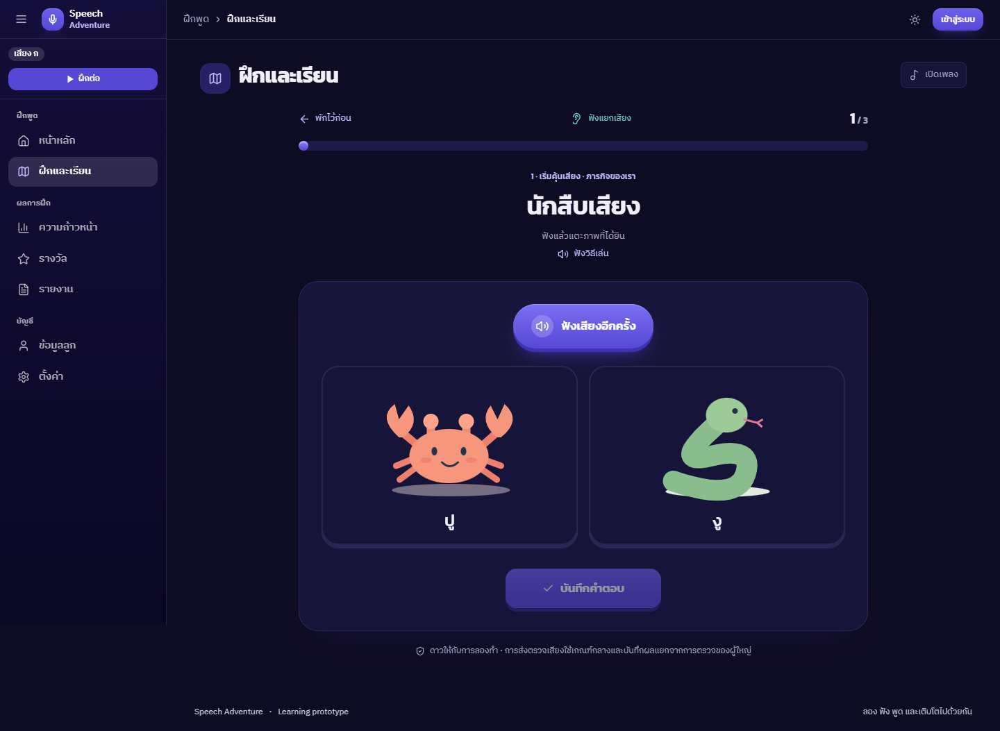
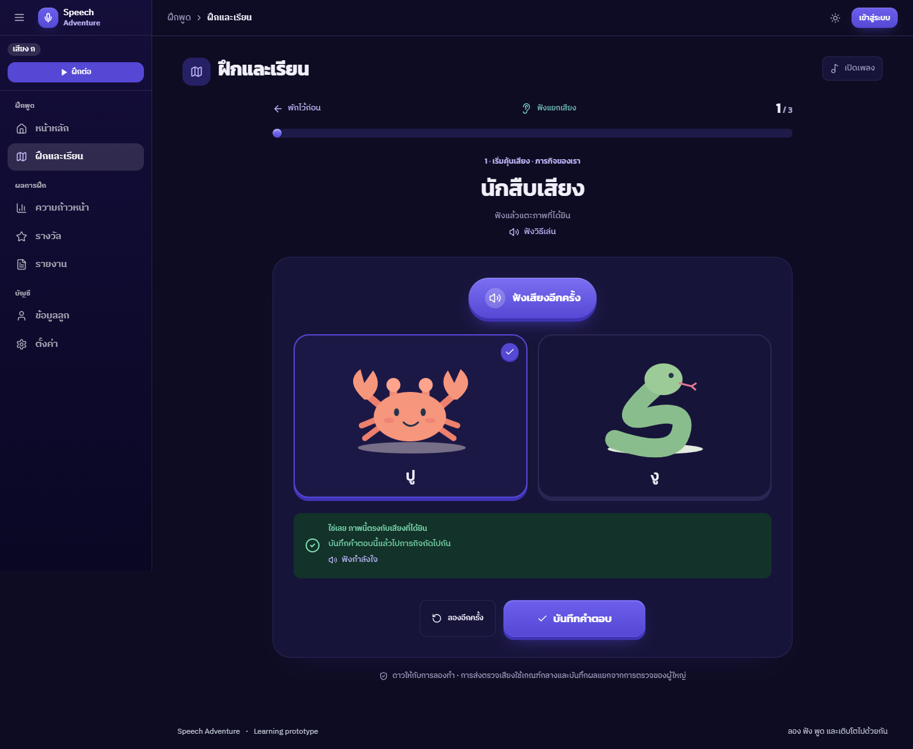
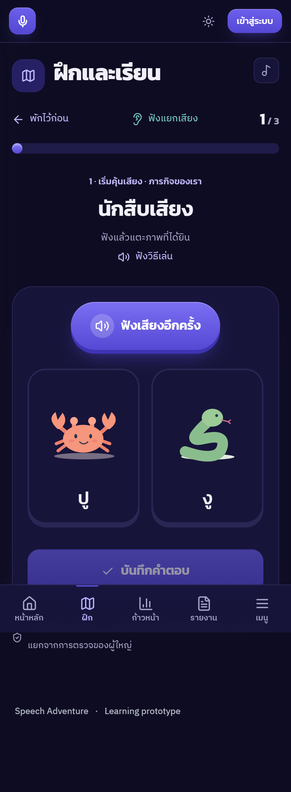

เลื่อนลงดูหลังเลือก: ต้องกด "บันทึกคำตอบ" แล้ว "ภารกิจถัดไป"
แบบใหม่
Speech Adventure · ฝึกและเรียน
แตะเพื่อฟังซ้ำพี่ปูหิว อยากกิน… "ปู"
แตะภาพที่ได้ยิน
หรือกด 1 2
ก · ฟังคำ แล้วแตะภาพ
Speech Adventure · ฝึกและเรียน
ข · ถูก: พี่ปูกิน ได้ดาว ไปต่อเอง · ผิด: "ฟังอีกทีนะ"
แตะเพื่อฟังซ้ำพี่ปูหิว อยากกิน… "ปู"
แตะภาพที่ได้ยิน
ผู้ใหญ่
ก · ฟังคำ แล้วแตะภาพ
ข · แตะถูก: พี่ปูกิน ได้ดาว ไปต่อเอง · แตะผิด: "ฟังอีกทีนะ" เล่นเสียงซ้ำ
บนคอม: ภาพใหญ่เต็มจอไม่ต้องเลื่อน · คลิก แตะจอ หรือกด 1 2
1519 → 5สิ่งที่แตะได้
308436 → 6068ตัวอักษรบนจอ
1.31.2 → 1ความสูง (จอ)
3 → 1กดต่อข้อ
- ตัด หัวแอป, เมนูล่าง, "1 · เริ่มคุ้นเสียง · ภารกิจของเรา"
- ตัด "บันทึกคำตอบ" และ "ภารกิจถัดไป" ระบบบันทึกเมื่อแตะภาพ
- ย้าย "ฟังเสียงอีกครั้ง" ไปที่ลูกโป่งคำพูดพี่ปู
- เพิ่ม พี่ปูตอบสนองทันที และดาว
4 · ดูปากและพูดตาม → กระจกวิเศษ
หน้าที่ข้อความเยอะที่สุด (บนมือถือสูง 2 จอ ปุ่มบันทึกอยู่ใต้จอ) · แบบใหม่ 3 ฉากต่อข้อ: พี่ปูทำในกระจก → ถึงตาหนู → ฟังเสียงสะท้อน
ปัจจุบัน
Speech Adventure · ฝึกและเรียน
แบบใหม่
Speech Adventure · ฝึกและเรียน
ปิดปาก›อ้า "า"›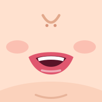
ผ่อน ดูกระจกพี่ปูนะ ปิดปาก… แล้วปล่อย!
ปา
ฟังพี่ปูก่อน…ดูภาพปากคนจริง · ตัวเลือกผู้ใหญ่ ▾
ก · พี่ปูทำให้ดู: กระจกพี่ปูเล่นภาพปากทีละจังหวะพร้อมเสียง
Speech Adventure · ฝึกและเรียน
ถึงตาหนู!ปา
✓ ได้ยินแล้วหรือกด Space ค้างไว้
ข · ถึงตาหนู: เพื่อนในกระจกขยับปากตามเสียงหนูทันที
Speech Adventure · ฝึกและเรียน
กระจกวิ้ง!
ชิ้นกระจก 1/3
ฟังพี่ปูฟังหนู
ไปต่อผู้ใหญ่ฟังแล้ว เด็กพูดเป็นอย่างไร
ทำได้ฝึกอีกข้าม
ค · เสียงสะท้อน: ได้ชิ้นกระจก · ผู้ใหญ่แตะผล 1 ครั้ง (หรือกด 1 / 2 / 3)
ดูกระจกพี่ปูนะ ปิดปาก… แล้วปล่อย!
ปิดปาก›อ้า "า"›ผ่อน
ปา
ฟังพี่ปูก่อน…ดูภาพปากคนจริง · ตัวเลือกผู้ใหญ่ ▾
ก · พี่ปูทำให้ดู: กระจกเล่นภาพปากทีละจังหวะ แถบล่างบอกว่าตอนนี้จังหวะไหน
ถึงตาหนู!กดค้างแล้วพูด "ปา"
✓ ได้ยินแล้ว ข · ถึงตาหนู: เพื่อนในกระจกขยับปากตามเสียงหนู · บอกแค่ "ได้ยินแล้ว" ไม่ใช่ความดัง
กระจกวิ้ง!
ชิ้นกระจก 1/3
ฟังพี่ปูฟังหนู
ไปต่อผู้ใหญ่ฟังแล้ว เด็กพูดเป็นอย่างไร
ทำได้ฝึกอีกข้าม
ค · เสียงสะท้อน: ฟังพี่ปูแล้วฟังหนูต่อกัน ได้ชิ้นกระจก · เล่นด้วยกัน: ผู้ใหญ่แตะผล 1 ครั้ง
บนคอม: กระจกสองบานอยู่ซ้ายเห็นพร้อมกัน คำและปุ่มพูดอยู่ขวา · Space ค้าง = กดไมค์ค้าง
2327 → 2สิ่งที่แตะได้
649777 → 104ตัวอักษรบนจอ
21.4 → 1ความสูง (จอ)
4 → 2กดต่อข้อ
- ตัด หัวข้อซ้อน 4 ชั้น เหลือคำฝึกคำเดียว
- ตัด ปุ่มจังหวะปาก 1·2·3, ‹ ›, "ดูทีละจังหวะอัตโนมัติ" กระจกเล่นเองและแถบล่างบอกจังหวะ
- ตัด อัด → หยุด → บันทึก → ถัดไป เหลือ "กดค้างแล้วพูด"
- ย้าย ภาพปากคนจริง, "ทดลองตอบโดยไม่อัดเสียง", "ขอคำใบ้" ไปแถบผู้ใหญ่
- เพิ่ม เกมกระจกวิเศษ: พี่ปูทำ → หนูทำ → ฟังเสียงสะท้อน ครบ 3 ข้อได้กรอบกระจกครบ
- เพิ่ม ภาพปากการ์ตูนที่เห็นรูปปากชัด (ดูหัวข้อ "ภาพปาก")
ไมค์วัดอะไร (ในเครื่อง)
- หนูพูดตอนถึงตาไหม และเสียงยาวพอเป็นคำไหม · ไม่ให้รางวัลกับความดัง
- เพื่อนในกระจก: เงียบ = ปิดปาก, มีเสียง = อ้า, จบเสียง = ผ่อน ไม่ใช้กล้อง
- ถูก/ผิดยังมาจากผู้ใหญ่ หรือ AI เมื่อเปิดใช้
ทำไมไม่ใช้เกมเป่าเรือ
- เรือให้รางวัลกับเสียงดังและแรงลม เด็กจะตะโกนหรือเป่าแทนการทำปากให้ถูก
- ใช้ได้แค่เสียงที่มีลมออก เช่น ป ไม่เข้ากับ ม หรือ ก
- งานวิจัยส่วนใหญ่ไม่พบว่าการฝึกเป่าช่วยให้ออกเสียงดีขึ้น (รอนักแก้ไขการพูดยืนยัน)
5 · ฝึกพยางค์ → กระโดดหินข้ามลำธาร
หนึ่งพยางค์ = หนึ่งก้าว ให้เด็กเห็นจังหวะพยางค์เป็นภาพ
ปัจจุบัน
Speech Adventure · ฝึกและเรียน
แบบใหม่
Speech Adventure · ฝึกและเรียน
พูดหนึ่งครั้ง พี่ปูกระโดดหนึ่งก้อน
หรือกด Space ค้างไว้
นับช่วงเสียงขึ้น-เงียบในเครื่อง · ถึงธง = จบข้อ
พูดหนึ่งครั้ง พี่ปูกระโดดหนึ่งก้อน
ผู้ใหญ่
นับช่วงเสียงขึ้น-เงียบในเครื่อง · ถึงธง = จบข้อ
บนคอม: ลำธารกว้างขึ้น เห็นหินครบทุกก้อนพร้อมคำ ปุ่มพูดอยู่ข้าง ๆ
1620 → 3สิ่งที่แตะได้
356484 → 6785ตัวอักษรบนจอ
1.51.4 → 1ความสูง (จอ)
4 → 2กดต่อข้อ
- ตัด หัวข้อซ้อนและข้อความอธิบายเหมือนหน้า 4
- เพิ่ม หินแต่ละก้อนมีพยางค์ ใช้ฟอนต์ทรงหนังสือเรียน
- พูดติดกันเร็วเกิน ระบบนับเป็นก้าวเดียว พี่ปูชวน "ช้า ๆ ทีละก้อน"
6 · ฝึกคำ → การ์ดสติกเกอร์
เรียกชื่อภาพ แล้วได้สติกเกอร์สะสม ให้อยากเล่นต่อ
ปัจจุบัน
Speech Adventure · ฝึกและเรียน
แบบใหม่
Speech Adventure · ฝึกและเรียน
นี่คืออะไรเอ่ย? บอกพี่ปูหน่อย
นึกไม่ออก? แตะพี่ปูให้กระซิบใบ้
หรือกด Space ค้างไว้
ก · เห็นภาพ แล้วเรียกชื่อ
Speech Adventure · ฝึกและเรียน
 สติกเกอร์ใหม่!
สติกเกอร์ใหม่!กระเป๋า
เก็บในสมุดสติกเกอร์แล้ว
ฟังเสียงหนูไปต่อ
ข · โชว์คำ (ฟอนต์หนังสือเรียน) ได้สติกเกอร์
นี่คืออะไรเอ่ย? บอกพี่ปูหน่อย
นึกไม่ออก? แตะพี่ปูให้กระซิบใบ้
ผู้ใหญ่
ก · เห็นภาพ กดค้างแล้วเรียกชื่อ
สติกเกอร์ใหม่!
กระเป๋า
เก็บในสมุดสติกเกอร์แล้ว
ฟังเสียงหนูไปต่อ
ผู้ใหญ่
ข · โชว์คำ (ฟอนต์หนังสือเรียน) ได้สติกเกอร์ · ไอคอนสมุด = สติกเกอร์สะสม
บนคอม: การ์ดภาพอยู่ซ้าย คำและปุ่มอยู่ขวา ตาเด็กไล่จากภาพไปคำ · ไอคอนสมุดมุมขวาเปิดสติกเกอร์สะสม
1620 → 4สิ่งที่แตะได้
352480 → 6583ตัวอักษรบนจอ
1.41.2 → 1ความสูง (จอ)
4 → 2กดต่อข้อ
- ย้าย "ขอคำใบ้" เป็นการแตะพี่ปูให้กระซิบ
- เพิ่ม สมุดสติกเกอร์สะสม (ต่อกับหน้า "รางวัล" ที่มีอยู่)
- ขั้นวลีและประโยคใช้รูปแบบเดียวกัน แต่เป็นรถไฟต่อโบกี้ตามจำนวนคำ
7 · วลีและประโยค → รถไฟคำ
หนึ่งคำ = หนึ่งตู้ ให้เด็กเห็นว่าต้องพูดต่อกันจนจบ · ตัวอย่างจากข้อจริง "ปูตัวเล็ก"
ปัจจุบัน
Speech Adventure · ฝึกและเรียน
แบบใหม่
Speech Adventure · ฝึกและเรียน
แตะเพื่อฟังซ้ำพูดตามพี่ปูให้ต่อกันนะ "ปูตัวเล็ก"
พูดให้ต่อกันจนจบ
หรือกด Space ค้างไว้
ก · รถไฟซ้าย ปุ่มพูดขวา
Speech Adventure · ฝึกและเรียน
ปู๊น ๆ ออกเดินทาง!
ฟังเสียงหนูไปต่อ
ผู้ใหญ่ฟังแล้ว เด็กพูดเป็นอย่างไร
ทำได้ฝึกอีกข้าม
ข · ครบทุกตู้ รถไฟออกเดินทาง
แตะเพื่อฟังซ้ำพูดตามพี่ปูให้ต่อกันนะ "ปูตัวเล็ก"
พูดให้ต่อกันจนจบ
ก · ตู้สว่างทีละตู้ตามเสียงที่ต่อเนื่อง (ภาพนี้: พูดไปแล้ว 1 คำ)
ปู๊น ๆ ออกเดินทาง!
ฟังเสียงหนูไปต่อ
ผู้ใหญ่ฟังแล้ว เด็กพูดเป็นอย่างไร
ทำได้ฝึกอีกข้าม
ข · ครบทุกตู้ รถไฟออกเดินทาง · ผู้ใหญ่แตะผล 1 ครั้ง
บนคอม: รถไฟยาวเต็มฝั่งซ้าย เห็นทุกคำพร้อมกัน
1620 → 4สิ่งที่แตะได้
376504 → 7997ตัวอักษรบนจอ
1.41.3 → 1ความสูง (จอ)
4 → 2กดต่อข้อ
- ตัด หัวข้อซ้อน "1 · เริ่มคุ้นเสียง · ภารกิจของเรา", "ลองพูดวลีสั้น ๆ" และคำอธิบาย
- ย้าย "ขอคำใบ้", "ทดลองตอบโดยไม่อัดเสียง" ไปแถบผู้ใหญ่
- เพิ่ม คำในตู้ใช้ฟอนต์ทรงหนังสือเรียน เด็กเห็นว่าวลีมีกี่คำ
- ไมค์วัดในเครื่องแค่ว่าเสียงต่อเนื่องยาวพอกับจำนวนคำ ไม่ได้นับคำจริง · หยุดกลางวลีนาน รถไฟจอดรอ "ต่อให้จบนะ" แล้วเล่นตัวอย่างให้ฟัง
8 · ลองใช้จริง → พี่ปูซ่อนแอบ
ตรงกับกิจกรรม "เล่นซ่อนภาพ" เดิม แต่สลับบทบาท: เด็กเป็นคนรู้ว่าพี่ปูซ่อนตรงไหน จึงต้องพูดบอกผู้ใหญ่เอง
ปัจจุบัน
Speech Adventure · ฝึกและเรียน
ผู้ใหญ่เลือกผลจากรายการ 3 ข้อ + ช่องติ๊ก แล้วกดบันทึก
แบบใหม่
Speech Adventure · ฝึกและเรียน
ผู้ใหญ่หันหลังก่อนนะ หนูดูพี่ปูซ่อน!
จำไว้นะ พี่ปูซ่อนตรงไหน
ผู้ใหญ่: หันหลังรอ พี่ปูจะบอกเมื่อพร้อม
ก · เด็กเห็นพี่ปูซ่อน
Speech Adventure · ฝึกและเรียน
บอกผู้ใหญ่เลย พี่ปูอยู่ไหน?
เช่น "ปูอยู่ในกล่อง"
ผู้ใหญ่: ฟังเด็กบอก แล้วคลิกที่ซ่อน
ข · ผู้ใหญ่คลิกที่ซ่อนตามที่ได้ยิน
Speech Adventure · ฝึกและเรียน
ผลการพูด
ทำได้ตามเป้ายังต้องช่วยประเมินไม่ได้
ค · เปิดดูที่ซ่อน ผู้ใหญ่ให้ผล
ผู้ใหญ่หันหลังก่อนนะ หนูดูพี่ปูซ่อน!
จำไว้นะ พี่ปูซ่อนตรงไหน
ผู้ใหญ่: หันหลังรอ พี่ปูจะบอกเมื่อพร้อม
ก · เด็กเห็นพี่ปูมุดเข้ากล่อง ผู้ใหญ่ไม่เห็น
บอกผู้ใหญ่เลย พี่ปูอยู่ไหน?
เช่น "ปูอยู่ในกล่อง"
ผู้ใหญ่: ฟังเด็กบอก แล้วแตะที่ซ่อน
กล่องถังตะกร้า
ข · เด็กพูดบอก ผู้ใหญ่แตะตามที่ได้ยิน
ผลการพูด (เหมือนรายการเดิม)
ทำได้ตามเป้ายังต้องช่วยประเมินไม่ได้
ค · เปิดดูที่ซ่อน ผู้ใหญ่ให้ผล 1 ครั้ง
บนคอม: ฉากใหญ่ฝั่งซ้าย ผู้ใหญ่คลิกที่ซ่อนจากแถบล่าง
1822 → 2สิ่งที่แตะได้
461589 → 108ตัวอักษรบนจอ
1.51.4 → 1ความสูง (จอ)
- ตัด หัวข้อซ้อน, ป้าย "เล่นด้วยกันนอกจอได้", ปุ่ม "บันทึกการลองทำ"
- ย้าย ผล 3 ข้อเดิม (ทำได้ตามเป้าหมาย / ยังต้องช่วยฝึก / ยังประเมินไม่ได้) เป็นปุ่มเดียวแตะจบ ส่งเข้าระบบเหมือนเดิม · "มีผู้ใหญ่ช่วย" บันทึกอัตโนมัติเพราะเป็นเกมเล่นด้วยกัน
- เพิ่ม ภารกิจที่ต้องสื่อสารจริง: ผู้ใหญ่หาไม่เจอถ้าเด็กไม่บอก
- ไม่ใช้ไมค์ ผู้ใหญ่ฟังและตัดสินเอง · ถ้าผู้ใหญ่แตะผิดที่ พี่ปูให้เด็กลองบอกอีกครั้ง
9 · หลังพูดจบ: สองโหมดต่างกันตรงไหน
หน้าจอเด็กเหมือนกัน ต่างกันแค่ "ผู้ใหญ่ตรวจตอนไหน"
ปัจจุบัน
Speech Adventure · ฝึกและเรียน
ข้อความสถานะ "รอบนี้เป็นการจำลองคำตอบ · ผลการพูดยังรอผู้ใหญ่ช่วยตรวจ"
แบบใหม่
Speech Adventure · ฝึกและเรียน
เล่นด้วยกัน · ผู้ใหญ่ฟังแล้วเด็กพูดเป็นอย่างไร
ทำได้ฝึกอีกข้าม
เล่นด้วยกัน (ระดับ 1–2): แตะผล 1 ครั้งต่อข้อ
Speech Adventure · ฝึกและเรียน
เล่นเอง (ระดับ 3–4): เก็บ "รอผู้ใหญ่ตรวจ"
เล่นด้วยกัน · ผู้ใหญ่ฟังแล้วเด็กพูดเป็นอย่างไร
ทำได้ฝึกอีกข้าม
เล่นด้วยกัน (ระดับ 1–2): แตะผล 1 ครั้งต่อข้อ
เล่นเอง (ระดับ 3–4): เก็บ "รอผู้ใหญ่ตรวจ" ไปตรวจที่หน้าจบรอบหรือคิวครู
บนคอม: ผู้ใหญ่เลือกผลด้วยแป้น 1 2 3 ได้ สะดวกสำหรับครูที่เปิดบนจอใหญ่หน้าห้อง
2529 → 4สิ่งที่แตะได้
673801 → 67ตัวอักษรบนจอ
2.11.4 → 1ความสูง (จอ)
- ตัด ข้อความสถานะเชิงระบบบนจอเด็ก
- เพิ่ม ผลแบบปุ่มไอคอน 3 ปุ่ม ส่งเข้าระบบกลางเหมือน "ผู้ใหญ่ยืนยันผล" ที่มีอยู่
- เมื่อเปิด AI ตรวจเสียง ใบหน้าที่ AI แนะนำถูกเลือกไว้ให้ ผู้ใหญ่แค่ยืนยัน
10 · จบรอบ: ฉลองสำหรับเด็ก แยกจากผลสำหรับผู้ใหญ่
ตอนนี้ดาว รายการผล และคำอธิบายผู้ใหญ่อยู่หน้าเดียวกัน · แบบใหม่แยกเป็นสองชั้น
ปัจจุบัน
Speech Adventure · ฝึกและเรียน
แบบใหม่
Speech Adventure · ฝึกและเรียน
ภารกิจสำเร็จ!
ได้สติกเกอร์ 3 ดวง
เล่นอีกด่านต่อไป
ผู้ใหญ่: ดูผลรอบนี้และคำแนะนำ ›
ก · จอเด็ก: ฉลอง ปุ่มใหญ่ 2 ปุ่ม
Speech Adventure · ฝึกและเรียน
ผลรอบนี้ฟังแยกเสียง · เสียง ป · สำหรับผู้ใหญ่
ฟังเลือกถูก 3/3 · ข้อพูดรอตรวจ 2ตรวจ ›
คำแนะนำจาก Speech Adventure
ทำได้ดี · ฝึกต่อ · เล่นที่บ้าน 2 อย่าง
ขอคำแนะนำ ›
ดูความก้าวหน้า›
รายงาน›
ข้อความเรื่องการเก็บข้อมูลและ "ไม่ใช่การวินิจฉัย" อยู่หน้านี้
ข · หน้าผู้ใหญ่: เว็บปกติ มีเมนูซ้าย ฟอนต์และการ์ดแบบเดิม
ภารกิจสำเร็จ!
ได้สติกเกอร์ 3 ดวง
เล่นอีกด่านต่อไป
ผู้ใหญ่: ดูผลรอบนี้และคำแนะนำ ›
ก · จอเด็ก: ฉลอง ปุ่มใหญ่ 2 ปุ่ม
ผลรอบนี้ฟังแยกเสียง · เสียง ป · สำหรับผู้ใหญ่
ฟังเลือกถูก 3/3 · ข้อพูดรอตรวจ 2ตรวจ ›
คำแนะนำจาก Speech Adventure
ทำได้ดี · ฝึกต่อ · เล่นที่บ้าน 2 อย่าง
ขอคำแนะนำ ›
ดูความก้าวหน้า›
รายงาน›
ข้อความเรื่องการเก็บข้อมูลและ "ไม่ใช่การวินิจฉัย" อยู่หน้านี้
ข · หน้าผู้ใหญ่: หน้าตาเหมือนส่วนอื่นของเว็บ (ฟอนต์และการ์ดผู้ใหญ่)
บนคอม: จอเด็กเต็มหน้าต่าง ส่วนหน้าผลของผู้ใหญ่กลับมาเป็นเว็บปกติที่มีเมนูซ้าย
1723 → 45สิ่งที่แตะได้
691834 → 74ตัวอักษรบนจอ
1.61.4 → 1ความสูง (จอ)
- ย้าย "สิ่งที่ผู้ใหญ่ดูต่อได้", รายการผลรายข้อ, การ์ดคำแนะนำ ไปหน้าผู้ใหญ่
- ตัด "ครบแล้ว · สถานะการทำกิจกรรม", "3/3 ฟังและเลือกถูก" ออกจากจอเด็ก (เห็นดาวแทน)
- เพิ่ม ปุ่ม "เล่นอีก"
- โหมดเล่นเอง: "ผู้ใหญ่" ต้องผ่านประตูผู้ใหญ่ก่อน
11 · ประตูผู้ใหญ่ (โหมดเล่นเอง)
กันเด็กเข้าตั้งค่า ส่งเสียงให้ AI หรือกดยืนยันผลเอง · ผู้ใหญ่ทำได้ง่าย เด็กเล็กทำได้ยาก
ปัจจุบัน
ไม่มี
เมนูทุกอย่างเปิดได้จากหน้าฝึกโดยตรง
ไม่มี
เมนูทุกอย่างเปิดได้จากหน้าฝึกโดยตรง
แบบใหม่
Speech Adventure · ฝึกและเรียน
สำหรับผู้ใหญ่
กดค้างปุ่มด้านล่าง 3 วินาที
แล้วตอบ: สิบสอง ลบ ห้า เท่ากับเท่าไร
579
กลับไปเล่นตัวเลขเขียนเป็นคำ เด็กเล็กอ่านไม่ออก
สำหรับผู้ใหญ่
กดค้างปุ่มด้านล่าง 3 วินาที
แล้วตอบ: สิบสอง ลบ ห้า เท่ากับเท่าไร
579
กลับไปเล่น
ตัวเลขเขียนเป็นคำ เด็กเล็กอ่านไม่ออก · ปิดประตูนี้ได้ในโหมดเล่นด้วยกัน
บนคอม: กดค้างด้วยเมาส์หรือ Space ก็ได้
- เพิ่ม ใช้กับ: ตั้งค่า, สลับโหมด, ความไวไมค์, ยินยอมส่งเสียงให้ AI, ดู/ยืนยันผล, ออกจากระบบ
- ไม่ต้องใช้รหัสผ่าน ผู้ปกครองไม่ลำบาก
ส่วนที่ 3กรณีพิเศษ
เด็กไม่พูด ไมค์ใช้ไม่ได้ เวลาพัก ข้อมูลเสียง และโหมดสว่าง
12 · ถ้าไม่เป็นไปตามแผน
หน้าที่ทีมมักถาม: เด็กไม่พูด, ผู้ใหญ่บอกให้ฝึกอีก, ไมค์ใช้ไม่ได้, ห้องเสียงดัง · ทุกกรณีไม่หักดาวและไม่มีคำว่า "ผิด"
Speech Adventure · ฝึกและเรียน
มาพูดพร้อมพี่ปูนะ 1… 2… 3… ปา!
ไม่มีเสียง 8 วินาที · ผู้ใหญ่ช่วยชวน ›
เงียบนาน: ชวนพูดพร้อมกัน
Speech Adventure · ฝึกและเรียน
ปิดปาก ช้า ๆ›อ้า "า"›ผ่อน
ปิดปากให้สนิทก่อนนะ แล้วค่อยปล่อย
ลองอีกครั้ง "ปา"
หรือกด Space ค้างไว้
ฝึกอีก: บอกทีละจุด เล่นช้า ๆ
Speech Adventure · ฝึกและเรียน
ไมค์ใช้ไม่ได้ · เล่นแบบแตะจอ · วิธีเปิดไมค์ ›
ไมค์ใช้ไม่ได้: แตะจอแทน
Speech Adventure · ฝึกและเรียน
ไมค์และเสียงรอบข้างสำหรับผู้ใหญ่
ตอนนี้เสียงรอบข้างดังเสียงพัดลมหรือทีวีกลบเสียงเด็ก ลองย้ายไปที่เงียบกว่านี้
ความไวไมค์เด็กเสียงเบาให้เลื่อนไปทางขวา
ทดสอบให้เด็กพูด "ปา" 1 ครั้งเริ่มทดสอบ
ห้องเสียงดัง: หน้าผู้ใหญ่ในเว็บปกติ
มาพูดพร้อมพี่ปูนะ 1… 2… 3… ปา!
ไม่มีเสียง 8 วินาที · ผู้ใหญ่ช่วยชวน ›
เงียบนาน: พี่ปูชวนพูดพร้อมกัน ครั้งที่ 2 ค่อยเสนอ "ข้ามไปก่อน"
ปิดปากให้สนิทก่อนนะ แล้วค่อยปล่อย
ปิดปาก ช้า ๆ›อ้า "า"›ผ่อน
ลองอีกครั้ง "ปา"
ฝึกอีก: พี่ปูบอกทีละจุด และเล่นจังหวะนั้นช้า ๆ
ไมค์ใช้ไม่ได้ · เล่นแบบแตะจอ · วิธีเปิดไมค์ ›
ไมค์ใช้ไม่ได้: เปลี่ยนเป็นแตะจอเอง ผู้ใหญ่ให้ผลแทน
ไมค์และเสียงรอบข้างสำหรับผู้ใหญ่ · หลังประตูผู้ใหญ่
ตอนนี้เสียงรอบข้างดังเสียงพัดลมหรือทีวีกลบเสียงเด็ก ลองย้ายไปที่เงียบกว่านี้
แถบ = เสียงรอบข้าง · เส้นเหลือง = ระดับที่ใช้ได้
ความไวไมค์เด็กเสียงเบาให้เลื่อนไปทางขวา
ทดสอบให้เด็กพูด "ปา" 1 ครั้งเริ่มทดสอบ
ห้องเสียงดังหรือเด็กเสียงเบา: แจ้งผู้ใหญ่และให้ปรับความไว
เด็กเงียบหรือเขิน
- 8 วินาทีไม่มีเสียง → พี่ปูชวนพูดพร้อมกัน (พูดประสานเสียง ช่วยเด็กที่ยังไม่กล้า)
- ครั้งที่ 2 → เสนอ "ข้ามไปก่อนก็ได้" ไม่หักดาว ข้อนั้นกลับมาท้ายรอบ
- ผู้ใหญ่เห็นในแถบล่างว่าเด็กเงียบ จะช่วยชวนก็ได้
ผู้ใหญ่กด "ฝึกอีก" หรือ AI เห็นจุดที่ควรแก้
- พี่ปูบอกสิ่งที่ต้องทำ 1 อย่าง เช่น "ปิดปากให้สนิทก่อน" ไม่บอกว่าผิด
- กระจกเล่นจังหวะนั้นช้า ๆ แถบภาพปากชี้จังหวะที่ต้องดู
- คำบอกมาจากชุดคำแนะนำของแต่ละเสียงที่นักแก้ไขการพูดเขียนไว้
ไมค์ใช้ไม่ได้
- ไม่ได้อนุญาต ไม่มีไมค์ หรือเบราว์เซอร์ไม่รองรับ → เปลี่ยนเป็นโหมดแตะจอทันที เด็กเล่นต่อได้
- ผู้ใหญ่ให้ผลแทน และมีลิงก์ "วิธีเปิดไมค์" แยกตามเครื่อง
ห้องเสียงดังหรือเด็กเสียงเบา
- ระบบเทียบเสียงรอบข้างก่อนเริ่มข้อ ถ้าดังเกินจะบอกผู้ใหญ่
- ผู้ใหญ่ปรับความไวและกดทดสอบได้ หน้านี้อยู่หลังประตูผู้ใหญ่
13 · พักสายตา เวลาเล่น และข้อมูลเด็ก
เด็กเล็กมีสมาธิสั้น และเสียงเด็กเป็นข้อมูลส่วนบุคคล · ผู้ใหญ่กำหนดเวลาเล่นได้ และเห็นชัดว่าเสียงไปที่ไหน
Speech Adventure · ฝึกและเรียน
พักกันก่อนนะ
ยืดแขนขึ้นสูง ๆ กับพี่ปู
1:20
เล่นต่อพักสายตา
Speech Adventure · ฝึกและเรียน
ตั้งค่าการเล่นสำหรับผู้ใหญ่
เวลาเล่นต่อวัน10 นาที15 นาที20 นาทีไม่จำกัด
วิธีเล่นเล่นด้วยกันเล่นเอง
แนะนำตามระดับ: ระดับ 1–2 เล่นด้วยกัน
เสียงที่อัดเก็บในเครื่องนี้ชั่วคราวเพื่อ "ฟังเสียงหนู" และลบเมื่อจบข้อ ไม่ส่งออกจากเครื่อง ยกเว้นเปิด AI ตรวจเสียงและผู้ปกครองยินยอมแล้ว
ตั้งค่าการเล่นในเว็บปกติ
พักกันก่อนนะ
ยืดแขนขึ้นสูง ๆ กับพี่ปู
1:20
เล่นต่อเล่นครบตามที่ตั้งไว้: พี่ปูชวนพัก ปุ่มเล่นต่อกดได้เมื่อหมดเวลา
ตั้งค่าการเล่นสำหรับผู้ใหญ่ · หลังประตูผู้ใหญ่
เวลาเล่นต่อวัน10 นาที15 นาที20 นาทีไม่จำกัด
วิธีเล่นเล่นด้วยกันเล่นเอง
แนะนำตามระดับ: ระดับ 1–2 เล่นด้วยกัน
เสียงที่อัดเก็บในเครื่องนี้ชั่วคราวเพื่อ "ฟังเสียงหนู" และลบเมื่อจบข้อ ไม่ส่งออกจากเครื่อง ยกเว้นเปิด AI ตรวจเสียงและผู้ปกครองยินยอมแล้ว
ผู้ใหญ่ตั้งเวลา จังหวะพัก และวิธีเล่น · บอกชัดว่าเสียงอยู่ที่ไหน
ทำไมต้องมีหน้าพัก
- เด็กอนุบาลมักจดจ่อได้ราว 5–10 นาทีต่อครั้ง รอบละ 3 ข้อ เล่น 2 รอบแล้วพักพอดี
- หน้าพักเป็นกิจกรรมสั้น ๆ (ยืดตัว) ไม่ใช่จอว่าง และไม่มีโฆษณาหรือของให้กดออกไปที่อื่น
- ครบเวลาต่อวัน พี่ปูบอกลา "พรุ่งนี้มาเล่นกันใหม่นะ" ผู้ใหญ่ต่อเวลาได้หลังประตูผู้ใหญ่
ข้อมูลเสียงของเด็ก
- "ฟังเสียงหนู" ใช้เสียงที่เก็บในหน่วยความจำของเครื่องชั่วคราว ลบเมื่อจบข้อ
- ไมค์ในเกมวัดแค่มีเสียงไหมและนานเท่าไร ในเครื่อง ไม่ส่งไฟล์เสียง
- ส่งเสียงให้ AI ตรวจเฉพาะเมื่อแอดมินเปิดใช้และผู้ปกครองยินยอมแล้ว (ระบบตรวจกลางเดิม)
14 · โหมดสว่าง
เว็บมีปุ่มสลับสว่าง/มืดอยู่แล้ว หน้าเด็กจึงต้องรองรับทั้งสองแบบ · ใช้สีโหมดสว่างของเว็บ (พื้น #F6F6FA การ์ดขาว ตัวหนังสือ #15132E) ปุ่มทองและกระจกเหมือนเดิม
Speech Adventure · ฝึกและเรียน
ป เสียงที่ฝึก12
พี่ปูพูดให้ฟังวันนี้ไปส่องกระจกวิเศษกัน!
แผนที่ (สว่าง)
Speech Adventure · ฝึกและเรียน
ถึงตาหนู!ปา
✓ ได้ยินแล้วหรือกด Space ค้างไว้
กระจกวิเศษ (สว่าง)
ป เสียงที่ฝึก12
พี่ปูพูดให้ฟังวันนี้ไปส่องกระจกวิเศษกัน!
ไปต่อผู้ใหญ่
แผนที่ (สว่าง)
ถึงตาหนู!กดค้างแล้วพูด "ปา"
✓ ได้ยินแล้ว กระจกวิเศษ (สว่าง)
ผู้ใหญ่ฟังแล้ว เด็กพูดเป็นอย่างไร
ทำได้ฝึกอีกข้าม
ป้อนพี่ปู + แถบผู้ใหญ่ (สว่าง)
สิ่งที่เปลี่ยนในโหมดสว่าง
- พื้นหลังม่วงอ่อนไล่สีแทนกลางคืน ไม่มีดาว
- ปุ่มรอง การ์ดภาพ และแถบผู้ใหญ่เป็นการ์ดขาวขอบ #E8E7F0
- ปุ่มทอง กระจกทอง และตัวละครเหมือนเดิม เด็กจำได้ทั้งสองโหมด
ตรวจก่อนทำจริง
- ตัวหนังสือสีเทา #625F7C บนพื้นขาวผ่านเกณฑ์อ่านง่าย (WCAG AA) ตามที่ธีมเว็บตั้งไว้
- ปุ่มทองบนพื้นสว่างยังเด่น แต่ต้องเช็กเงาไม่ให้จาง
- ค่าเริ่มต้นตามที่ผู้ใหญ่เลือกไว้ในเว็บ
ส่วนที่ 4รายละเอียดดีไซน์
ตัวอักษร และภาพปากที่ต้องตัดสินใจ
ตัวอักษร: ดูเป็นเด็ก แต่ต้องไม่สอนรูปตัวอักษรผิด
เว็บใช้ Kanit / IBM Plex Sans Thai (ไม่มีหัว) · เด็กเล็กเรียนอ่านจากตัวมีหัวแบบหนังสือเรียน จึงแยกตามหน้าที่ (ฟอนต์ฟรีจาก Google Fonts)
ปัจจุบัน · Kanit
ดูแล้วลองพูดตาม
ก ป ม
คงไว้กับหน้าผู้ใหญ่ ไม่มีหัว ดูทางการ
เสนอ · Itim (คำพูดพี่ปู หัวข้อ ปุ่มในหน้าเด็ก)
ดูแล้วลองพูดตาม
ก ป ม
โค้งมน มีหัว เป็นมิตร อ่านง่าย
ทางเลือก · Mali
ดูแล้วลองพูดตาม
ก ป ม
น่ารักแบบลายมือ ใช้กับคำชมได้ ไม่ใช้กับตัวอักษรที่สอน
เสนอ · Sarabun (คำฝึกและตัวอักษรที่สอน)
ปู · ปลา · กระเป๋า
ก ป ม
ทรงหนังสือเรียน มีหัวชัด สำหรับสิ่งที่เด็กต้องจำรูป
ภาพปาก: รูปจริงหรือการ์ตูน
ภาพปากในแอปตอนนี้เป็นรูปคนจริงที่เห็นทั้งหน้าล่าง ปากจึงเล็ก · เทียบ 3 แบบ: ภาพเดิม, รูปจริงครอปเฉพาะปาก, การ์ตูน แล้วดูในเกมจริง
เทียบ 3 แบบ · เสียง "ปา" 3 จังหวะ ขนาดเท่ากัน
ภาพเดิมในแอป
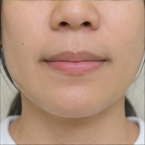
1 · ปิดปาก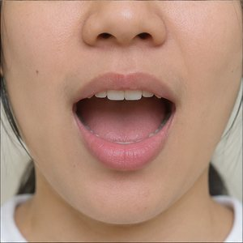
2 · อ้า "า"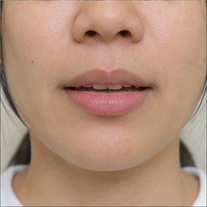
3 · ผ่อนเห็นตั้งแต่จมูกถึงคอ ปากกินพื้นที่ราวหนึ่งในสามของภาพ บนมือถือภาพจึงเล็กจนแยกจังหวะยาก
รูปจริง ครอปเฉพาะปาก (เสนอ)
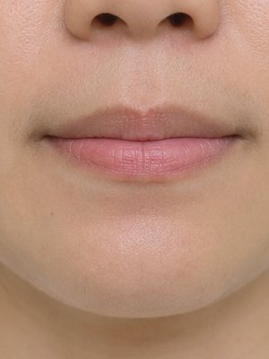
1 · ปิดปาก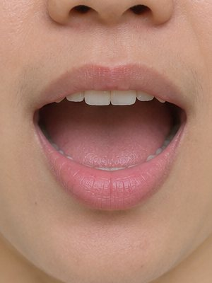
2 · อ้า "า"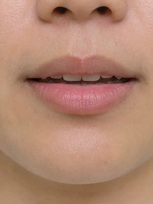
3 · ผ่อนภาพชุดเดิมของแอป ครอปใหม่ให้ปากเต็มภาพ เห็นริมฝีปาก ฟัน และระยะอ้าชัด ตรงกับปากคนจริง
การ์ตูน
1 · ปิดปาก2 · อ้า "า"3 · ผ่อน
รูปปากใหญ่ ๆ ดูออกทันที แต่ไม่เห็นรายละเอียด เช่น ริมฝีปากกดแน่นแค่ไหน
ในเกมกระจกวิเศษ สลับโทรศัพท์/คอมที่มุมขวาล่าง
Speech Adventure · ฝึกและเรียน
ดูกระจกพี่ปูนะ ปิดปาก… แล้วปล่อย!
ปา
ฟังพี่ปูก่อน…ภาพปากสร้างด้วย AI · ตัวเลือกผู้ใหญ่ ▾
แบบผสม (เสนอ) · กระจกพี่ปูเป็นรูปจริงครอปปาก แถบจังหวะเป็นไอคอนการ์ตูน
Speech Adventure · ฝึกและเรียน
ดูกระจกพี่ปูนะ ปิดปาก… แล้วปล่อย!
ปา
ฟังพี่ปูก่อน…ภาพปากสร้างด้วย AI · ตัวเลือกผู้ใหญ่ ▾
การ์ตูนทั้งหมด (แบบในหน้า 4 ตอนนี้)
ดูกระจกพี่ปูนะ ปิดปาก… แล้วปล่อย!
ปิดปาก›อ้า "า"›ผ่อน
ปา
ฟังพี่ปูก่อน…ภาพปากสร้างด้วย AI · ตัวเลือกผู้ใหญ่ ▾
แบบผสม (เสนอ) · พี่ปูทำให้ดู: กระจกพี่ปูเป็นรูปจริงครอปปาก
ถึงตาหนู!กดค้างแล้วพูด "ปา"
✓ ได้ยินแล้ว แบบผสม (เสนอ) · ถึงตาหนู: กระจกหนูยังเป็นการ์ตูนที่ขยับตามเสียง
ดูกระจกพี่ปูนะ ปิดปาก… แล้วปล่อย!
ปิดปาก›อ้า "า"›ผ่อน
ปา
ฟังพี่ปูก่อน…ภาพปากสร้างด้วย AI · ตัวเลือกผู้ใหญ่ ▾
การ์ตูนทั้งหมด (แบบในหน้า 4 ตอนนี้)
เลือกแบบไหนดี
| เรื่องที่ดู | ภาพเดิมในแอป | รูปจริง ครอปปาก | การ์ตูน |
|---|
| เห็นรูปปากชัดบนมือถือ | พอใช้ ปากเล็ก | ชัด | ชัดเฉพาะรูปใหญ่ ๆ |
| ตรงกับปากคนจริงที่เด็กเห็นทุกวัน | ตรง | ตรง | ย่อรายละเอียด |
| เห็นริมฝีปากกด ฟัน และระยะอ้า | เห็นแต่เล็ก | เห็นชัด | เห็นน้อย |
| ใช้เป็น "เพื่อนในกระจก" ที่ขยับตามเสียงเด็ก | ดูแปลก หน้าคนอื่นพูดแทน | ดูแปลก | เหมาะ |
| เห็นตำแหน่งลิ้น (ต ด น ล ก ง) | ไม่เห็น | ไม่เห็น | ไม่เห็น |
| งานที่ต้องทำเพิ่ม | ไม่มี | ครอปจากภาพเดิม 6 ท่า (ทำในไวร์เฟรมแล้ว) | วาดชุดใหม่ 8–10 รูป |
ที่เสนอ: แบบผสม
- กระจกพี่ปู (ตัวอย่างให้ดูตาม) ใช้รูปจริงครอปเฉพาะปาก
- แถบจังหวะใต้กระจก และกระจกของหนูที่ขยับตามเสียง ใช้การ์ตูน
- เสียงที่ใช้ลิ้นต้องมีภาพด้านข้างเพิ่ม ไม่ว่าจะเลือกแบบไหน
ถ้าทีมยังเลือกไม่ได้
- ใส่ไว้ในการทดสอบกับเด็ก: ครึ่งหนึ่งเห็นรูปจริงในกระจกพี่ปู อีกครึ่งเห็นการ์ตูน
- ให้นักแก้ไขการพูดดูว่าเด็กทำปากตามได้ใกล้ตัวอย่างแค่ไหน
- รูปชุดนี้เป็นภาพสร้างด้วย AI ตามที่แอปบอกไว้เดิม ยังต้องแจ้งผู้ใหญ่เหมือนเดิม
ชุดรูปจริง ครอปจากภาพเดิมของแอป
ปิดปากสนิทป บ พ ม
อ้ากว้างอา
ผ่อนปากท้ายเสียง
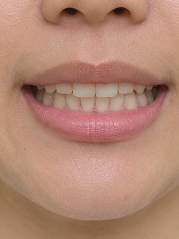
ยิ้มกว้างอี เอ
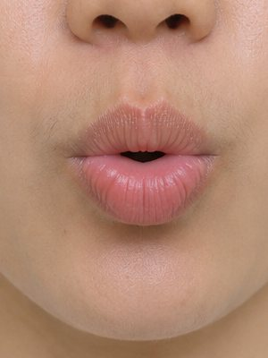
ห่อปากอู โอ
ชุดการ์ตูน
ปิดปากสนิทป บ พ ม
อ้ากว้างอา
ผ่อนปากท้ายเสียง
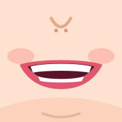
ยิ้มกว้างอี เอ
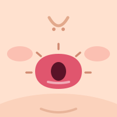
ห่อปากอู โอ
1 · ปิดปาก›
2 · อ้า "า"›
3 · ผ่อน
ปา3 จังหวะเดิมของแอป (เตรียม · ช่วงสระ · ผ่อนคลาย) ใช้ภาพชุดนี้แทน กระจกวิเศษเล่นต่อกันเอง และเพื่อนในกระจกของเด็กก็ใช้ภาพชุดเดียวกัน
ใช้อย่างไร
- ทุกข้อฝึกมีภาพปาก 3 จังหวะอยู่แล้ว แค่จับคู่จังหวะกับรูปปากในชุดนี้
- รูปถ่ายคนจริงยังเปิดดูได้จากแถบผู้ใหญ่ ("ดูภาพปากคนจริง")
- ชุดเต็มควรมีราว 8–10 รูป เพิ่มลิ้นแตะฟันบน (ต ด น ล) และเสียงจากคอ (ก ค ง) ซึ่งต้องมีภาพด้านข้างช่วย
ทำไมเป็นการ์ตูน
- รูปปากชัดและตั้งใจขยายให้เห็นความต่าง เด็กเล็กจำได้ง่ายกว่าภาพถ่าย
- หน้าเดียวกันทุกเสียง เด็กสังเกตแค่ปากที่เปลี่ยน
- เข้ากับพี่ปูและกระจกวิเศษ ไม่ดูแปลกเหมือนรูปถ่ายในกรอบการ์ตูน
ส่วนที่ 5แผนงาน
ใช้ของเดิมอะไรได้ ทำใหม่อะไร แบ่งเฟส และวิธีทดสอบกับเด็ก
15 · แผนทำจริงและแผนทดสอบ
ใช้ของที่มีอยู่ให้มากที่สุด แบ่ง 3 เฟส แต่ละเฟสจบด้วยการทดสอบกับเด็กจริง
ใช้ของเดิมได้
- ภาพพี่ปูและภาพประกอบทั้งหมด (Art ของห้องฝึก)
- หลักสูตร 6 ขั้นและข้อฝึกเดิม คำและภาพเดิม
- ระบบตรวจกลาง ผู้ใหญ่ยืนยันผล และ AI ตรวจเสียงเมื่อเปิดใช้
- เสียงพี่ปู Sulafat (สร้างเพิ่มให้ครบทุกประโยค)
- ธีม สี ปุ่ม และหน้ารางวัล
ต้องทำใหม่
- กรอบจอเด็กเต็มหน้าต่าง + แผนที่ + แถบผู้ใหญ่
- ตัวจับเสียงในเครื่อง: มีเสียงไหม นานเท่าไร เงียบตรงไหน เสียงรอบข้างดังไหม
- เกม 6 เกม และภาพปากการ์ตูนชุดใหม่ ผูกกับข้อฝึก
- โหมดเล่นด้วยกัน/เล่นเอง ประตูผู้ใหญ่ หน้าพัก และตั้งเวลา
| เฟส | สิ่งที่ทำ | ทดสอบเมื่อจบเฟส |
|---|
| 1 · แกนหลัก | กรอบจอเด็ก, แผนที่, ตัวจับเสียง, ป้อนอาหารพี่ปู, กระจกวิเศษ, แถบผู้ใหญ่ 3 ปุ่ม, โหมดแตะจอเมื่อไมค์ใช้ไม่ได้ | เทียบแบบเดิมกับแบบใหม่ ขั้น 1–2 |
| 2 · ครบขั้นพูดเดี่ยว | กระโดดหิน, การ์ดสติกเกอร์ + สมุดสติกเกอร์, หน้าจบรอบเด็ก/ผู้ใหญ่, ประตูผู้ใหญ่, หน้า "ถ้าไม่เป็นไปตามแผน" | เล่นครบ 1 รอบขั้น 3–4 |
| 3 · ครบทุกขั้น | รถไฟคำ, พี่ปูซ่อนแอบ, โหมดเล่นเอง, หน้าพักและตั้งเวลา, โหมดสว่าง | เด็กโตเล่นเองโดยไม่มีผู้ใหญ่ช่วย |
แผนทดสอบ
- เด็ก 6–8 คน: อนุบาล 3–4 คน (เล่นด้วยกัน) และ ป.1–3 อีก 3–4 คน (เล่นเอง) พร้อมผู้ใหญ่ที่มาด้วย
- แต่ละคนเล่นแบบเดิมและแบบใหม่อย่างละ 1 รอบ สลับลำดับครึ่งหนึ่ง
- ผู้ปกครองยินยอมก่อน ไม่อัดวิดีโอเด็ก จดเวลาและสิ่งที่เห็น
- เทียบภาพปาก: ครึ่งหนึ่งเห็นรูปจริงในกระจกพี่ปู อีกครึ่งเห็นการ์ตูน
วัดอะไร และผ่านเมื่อไร
- เวลาจนเด็กพูดครั้งแรกในข้อ · ผ่าน: ส่วนใหญ่ภายใน 10 วินาที
- ข้อที่เด็กทำจบเองโดยไม่ต้องช่วยกด · ผ่าน: ≥ 80% ในโหมดเล่นเอง
- ผู้ใหญ่แตะกี่ครั้งต่อข้อ · ผ่าน: ไม่เกิน 1 ครั้ง
- เด็กหลุดออกจากหน้าฝึกกี่ครั้ง · ผ่าน: 0
- ถามเด็ก "สนุกไหม" (หน้ายิ้ม 3 แบบ) และถามผู้ใหญ่ 3 ข้อ: ใช้ง่ายไหม เข้าใจผลไหม จะใช้ต่อไหม
ให้ทีมช่วยยืนยันก่อนเริ่มเฟส 1
- นักแก้ไขการพูด: ข้อมูลเรื่องการฝึกเป่า, ชุดภาพปากต่อเสียง และคำแนะนำเมื่อผู้ใหญ่กด "ฝึกอีก"
- ระดับไหนใช้โหมดเล่นด้วยกัน/เล่นเอง เป็นค่าเริ่มต้น
- โควตาสร้างเสียงพี่ปู (Sulafat) ให้ครบทุกประโยคในเกม